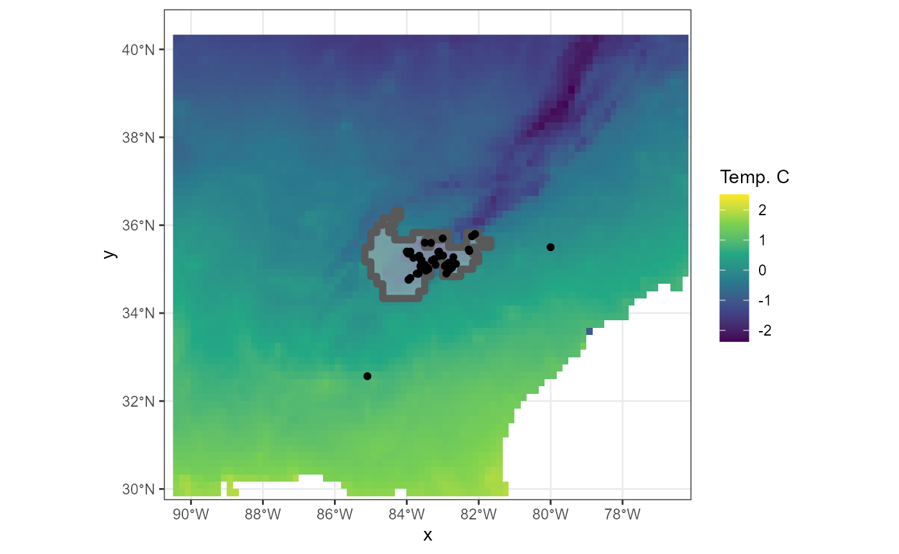
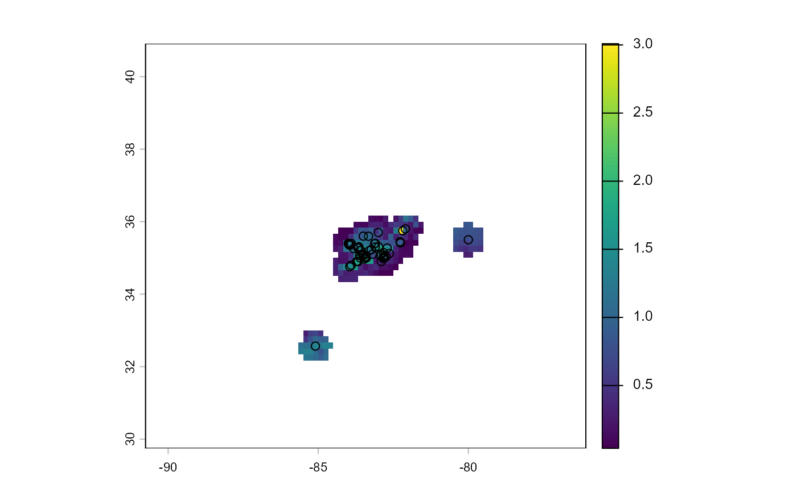
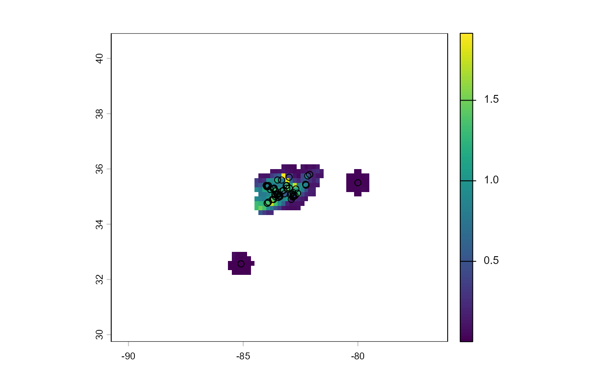
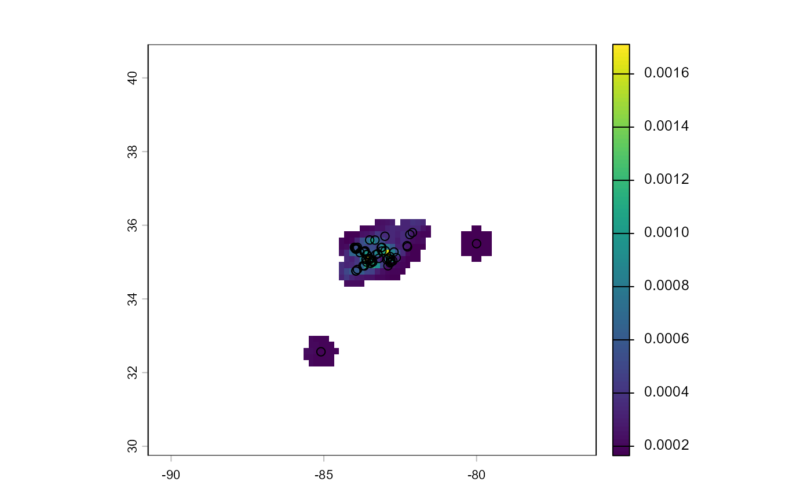
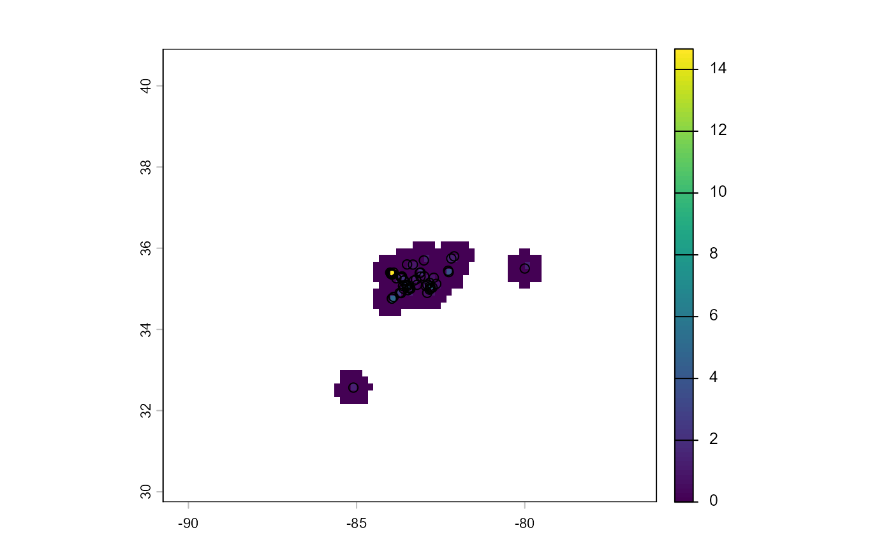

S4DM R package
Brian Maitner
2026-05-07
S4DM.RmdThis R package implements multiple species distribution modeling (SDM) methods that are suitable for small sample size species (S4; e.g. poorly sampled or small-ranged species). Currently, there are three types of models included:
- Plug-and-Play models
- Environmental-range models
- Density ratio models
Plug-and-play models
The plug-and-play SDM framework was developed by Drake and Richards (2018). Plug-and-play models fit SDMs as the ratio of a presence distribution and a background distribution. Plug-and-play refers to the ability of the methodology to accommodate any method for estimating density functions (e.g., Gaussian, kernel-density estimation). Users are thus able to choose from multiple methods for estimating SDMs using an evolving set of methods within one unified framework.
Density-ratio models
Rather than fitting presence and background distributions separately, density-ratio models directly fit the ratio of the presence and background distributions. Maxent is the most well-known of this class of models.
Environmental-range models
Environmental range models focus on identifying the environmental limits of a species’ niche.
Obtaining Occurrence and Climate data
To start, we’ll pull occurrence data for the plant species Trillium vaseyi from BIEN and environmental data from BioClim.
# Load libraries
library(BIEN)
#> Loading required package: RPostgreSQL
#> Loading required package: DBI
#> Type vignette("BIEN") or vignette("BIEN_tutorial") to get started
library(geodata)
#> Loading required package: terra
#> terra 1.9.11
library(ggplot2)
library(S4DM)
library(sf)
#> Linking to GEOS 3.14.1, GDAL 3.12.1, PROJ 9.7.1; sf_use_s2() is TRUE
library(terra)
library(tidyterra)
#>
#> Attaching package: 'tidyterra'
#> The following object is masked from 'package:stats':
#>
#> filter
# Make a temporary directory to store climate data
temp <- tempdir()
# Get some occurrence data
#tv <- BIEN_occurrence_species(species = "Trillium vaseyi")
data("sample_points")
# Get environmental data
# To make things a bit faster and easier, we'll limit ourselves to the 2 variables (mean temperature and annual precipitation)
# env <- worldclim_global(var = "bio",
# res = 10,
# path = temp)
# env <- env[[c(1,12)]]
env <- rast(system.file('ex/sample_env.tif', package="S4DM"))
# And we'll rescale the variables as well
env <- scale(env)
# Just to take a look to make sure we didn't mess anything up
plot(env)
Simplest case
In the simplest case, we can rely on the function
make_range_map which takes in longitude/latitude data (in
that order) along with environmental layers and makes some simple
defaults decisions to return a map produce with the specified settings.
This function is easy to use, but doesn’t have many features.
#> Warning: Removed 1760 rows containing missing values or values outside the scale range
#> (`geom_raster()`).
Working with model objects
For many situations we may want more control over the models that are
fit, or we may want to directly access the plug-and-play model so that
we can either 1) save the model object, or 2) project the model object
to another region in time or space. In these cases, the functions
fit_plug_and_play and fit_density_ratio can be
used to fit models, and the functions project_plug_and_play
and project_density_ratio to project them.
For these function, users must supply the presence and background data directly. We have included simple functions to help with this, but for most uses additional cleaning and other data processing will probably be useful.
# Here, we'll use the same data as before for Trillium vaseyi.
#First, we'll select the background data
sample_points_bg <- get_env_bg(coords = sample_points[c("longitude","latitude")],
env = env,
width = 50000,
standardize = TRUE) #note that we used a small set of background points to expedite model fitting
# The returned object 'xs_bg' contains two objects:
# 1) sample_points_bg$env a matrix of environmental covariates. This is what we need for modeling.
# 2) sample_points_bg$bg_cells a vector containing the environmental raster cell IDs that are present in tv_bg$env. This is useful for mapping the results.
# Next, we get the presence data:
sample_points_presence <- get_env_pres(coords = sample_points[c("longitude","latitude")],
env = env,
env_bg = sample_points_bg)
#The returned object 'tv_presence' contains two objects:
# 1) tv_presence$env a matrix of environmental covariates. This is what we need for modeling.
# 2) tv_presence$occurrence_sf a sf object containing the coordinate data. This is useful for conducting spatially stratified cross-validation.
# Now, we can fit the model. Previously we used rangebagging, this time we'll use a simple KDE estimation
sample_points_kde_kde <- fit_plug_and_play(presence = sample_points_presence$env,
background = sample_points_bg$env,
method = "kde")
# The object that was returned is of the class "pnp_model", which is essentially a list of model fits and associated metadata.
# To view this data on a map, we can project it to the background data we used in fitting (or we could project to a new location entirely). In either case, we use the function `project_plu_and_play`.
sample_points_kde_kde_predictions <- project_plug_and_play(pnp_model = sample_points_kde_kde,
data = sample_points_bg$env)
#Now we can make a blank raster to store our predictions
sample_points_kde_kde_raster <- env[[1]]
values(sample_points_kde_kde_raster) <- NA
#Add our predictions to the raster
sample_points_kde_kde_raster[sample_points_bg$bg_cells] <-
sample_points_kde_kde_predictions
#Now, we can plot our raster
plot(sample_points_kde_kde_raster,
xlim = c(sample_points_bbox[1],sample_points_bbox[3]),
ylim = c(sample_points_bbox[2],sample_points_bbox[4]))
points(sample_points[c("longitude","latitude")])
#To threshold this continuous raster to yield a binary raster
sample_points_kde_kde_raster <- sdm_threshold(prediction_raster = sample_points_kde_kde_raster,
occurrence_sf = sample_points_presence$occurrence_sf,
quantile = 0.05,
return_binary = T)
# As before, we'll plot this on top of temperature and occurrence records to see how well we did
# convert to polygon for easier visualization
sample_points_kde_kde_polygon <-
sample_points_kde_kde_raster |>
as.polygons()|>
st_as_sf()
# Now, we'll plot the standardized temperature raster, along with the occurrence records and the range map
ggplot(env)+
geom_raster(mapping = aes(x=x,y=y,fill=wc2.1_10m_bio_1))+
scale_fill_viridis_c(name="Temp. C", na.value = "transparent")+
scale_x_continuous(expand=c(0,0),
limits = c(sample_points_bbox[1],
sample_points_bbox[3]))+
scale_y_continuous(limits = c(sample_points_bbox[2],
sample_points_bbox[4]),
expand=c(0,0))+
theme_bw()+
geom_sf(data = sample_points_kde_kde_polygon,
fill = "grey",
size=2,
alpha=0.5)+
geom_point(data = sample_points,
mapping = aes(x=longitude,y=latitude))
#> Warning: Removed 1760 rows containing missing values or values outside the scale range
#> (`geom_raster()`).Flexibility
In the previous example we used Kernel Density Estimation to estimate both the presence and background distribution. However, Plug-and-Play modeling is incredibly flexible, and allows us to mix and match any methods for density estimation. To demonstrate, in the next example we’ll combine a Gaussian estimate the presence distribution and a KDE estimate of the background distribution.
# We'll rely on the same data as last time for simplicity.
# Since we're using different methods for estimating the presence and background distributions, we need to specify these separately:
sample_points_gaussian_kde <- fit_plug_and_play(presence = sample_points_presence$env,
background = sample_points_bg$env,
presence_method = "gaussian",
background_method = "kde")
sample_points_gaussian_kde_predictions <- project_plug_and_play(pnp_model = sample_points_gaussian_kde,
data = sample_points_bg$env)
# Now, we again convert everything to a raster and then to a polygon
sample_points_gaussian_kde_raster <- env[[1]]
values(sample_points_gaussian_kde_raster) <- NA
sample_points_gaussian_kde_raster[sample_points_bg$bg_cells] <- sample_points_gaussian_kde_predictions
# Now, we can plot our raster
plot(sample_points_gaussian_kde_raster,
xlim = c(sample_points_bbox[1],sample_points_bbox[3]),
ylim = c(sample_points_bbox[2],sample_points_bbox[4]))
points(sample_points[c("longitude","latitude")])
# To threshold this continuous raster to yield a binary raster
sample_points_gaussian_kde_raster <- sdm_threshold(prediction_raster =
sample_points_gaussian_kde_raster,
occurrence_sf = sample_points_presence$occurrence_sf,
quantile = 0.05,
return_binary = T)
# As before, we'll plot this on top of temperature and occurrence records to see how well we did
# Convert the raster to a polygon for visualization
# convert to polygon for easier visualization
sample_points_gaussian_kde_polygon <-
sample_points_gaussian_kde_raster |>
as.polygons()|>
st_as_sf()
# Now, we'll plot the standardized temperature raster, along with the occurrence records and the range map
ggplot(env)+
geom_raster(mapping = aes(x = x, y = y, fill = wc2.1_10m_bio_1))+
scale_fill_viridis_c(name="Temp. C", na.value = "transparent")+
scale_x_continuous(expand=c(0,0),
limits = c(sample_points_bbox[1],
sample_points_bbox[3]))+
scale_y_continuous(limits = c(sample_points_bbox[2],
sample_points_bbox[4]),
expand=c(0,0))+
theme_bw()+
geom_sf(data = sample_points_gaussian_kde_polygon,
fill = "grey",
size=2,
alpha=0.5)+
geom_point(data = sample_points,
mapping = aes(x=longitude,y=latitude))
#> Warning: Removed 1760 rows containing missing values or values outside the scale range
#> (`geom_raster()`).
Density-ratio models
In addition to methods that estimate the presence and background distributions separately, the package accommodates methods that directly estimate the density ratio, including uLSIF and Maxnet.
sample_points_maxnet <-
fit_density_ratio(presence = sample_points_presence$env,
background = sample_points_bg$env,
method = "maxnet")
sample_points_maxnet_predictions <-
project_density_ratio(dr_model = sample_points_maxnet,
data = sample_points_bg$env)
#Now, we again convert everything to a raster and then to a polygon
sample_points_maxnet_raster <- env[[1]]
values(sample_points_maxnet_raster) <- NA
sample_points_maxnet_raster[sample_points_bg$bg_cells] <-
sample_points_maxnet_predictions
#Now, we can plot our raster
plot(sample_points_maxnet_raster,
xlim = c(sample_points_bbox[1],
sample_points_bbox[3]),
ylim = c(sample_points_bbox[2],
sample_points_bbox[4]))
points(sample_points[c("longitude","latitude")])
ulsif
sample_points_ulsif <-
fit_density_ratio(presence = sample_points_presence$env,
background = sample_points_bg$env,
method = "ulsif")
sample_points_ulsif_predictions <-
project_density_ratio(dr_model = sample_points_ulsif,
data = sample_points_bg$env)
#Now, we again convert everything to a raster and then to a polygon
sample_points_ulsif_raster <- env[[1]]
values(sample_points_ulsif_raster) <- NA
sample_points_ulsif_raster[sample_points_bg$bg_cells] <-
sample_points_ulsif_predictions
#Now, we can plot our raster
plot(sample_points_ulsif_raster,
xlim = c(sample_points_bbox[1],
sample_points_bbox[3]),
ylim = c(sample_points_bbox[2],
sample_points_bbox[4]))
points(sample_points[c("longitude","latitude")])
Model Quality
To evaluate the quality of a model, we can use the function
evaluate_range_map, which conducts 5-fold,
spatially-stratified, cross-validation on fitted models. Here, we’ll
conduct cross-validation on a model using a Gaussian estimate of both
the presence and background distributions.
sample_points_gaussian_gaussian_fit <-
evaluate_range_map(occurrences = sample_points[c("longitude","latitude")],
env = env,
presence_method = "gaussian",
background_method = "gaussian")
#> Found more than one class "kcca" in cache; using the first, from namespace 'flexclust'
#> Also defined by 'kernlab'
#> Found more than one class "kcca" in cache; using the first, from namespace 'flexclust'
#> Also defined by 'kernlab'
#Rather than looking at all of the results, we'll focus on just a few:
sample_points_gaussian_gaussian_fit$fold_results[c('testing_AUC','testing_sensitivity','testing_specificity')]
#> testing_AUC testing_sensitivity testing_specificity
#> 1 0.9617094 0.9090909 0.9129942
#> 2 0.9963313 1.0000000 0.9327036
#> 3 0.8841812 0.8333333 0.9434456
#> 4 0.8630304 0.5000000 0.9211128
#> 5 0.9972956 1.0000000 0.9387903
#The AUC gives us an overall idea of the discriminatory ability of the model, while the sensitivity and specificity tell us how well it discriminates presence vs. background points (respectively).